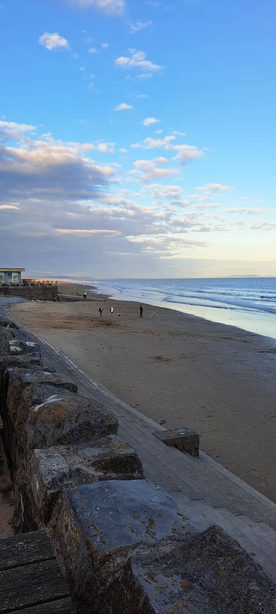
West Wales
A relaxed kite & wing base camp on the edge of Pendine, run by an IKO-qualified rider who knows these beaches and where the wind goes.
We give you a comfortable house, proper food, transport to the right beach every day, and someone on hand who reads the forecast so you don't have to. You bring your kit, your skills and your stoke.
This is a guiding and hospitality service — not a school. It's built for riders who are already self-sufficient on the water and just want to maximise their time riding instead of planning, driving and cooking.
The house itself is on Airbnb — you can check availability, photos and reviews there. Add the kite guiding package when you book, or get in touch to arrange it separately.
Your host is an IKO-qualified instructor who knows every beach, every tide and every wind angle on this coast.
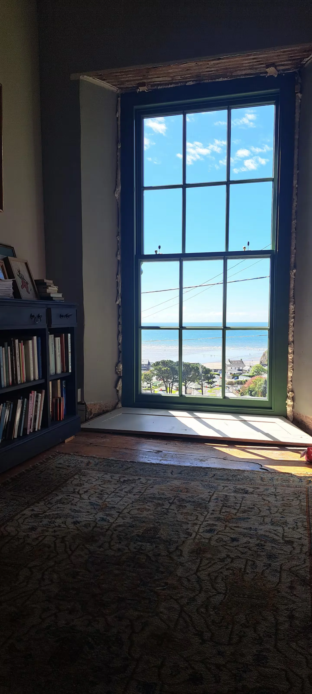
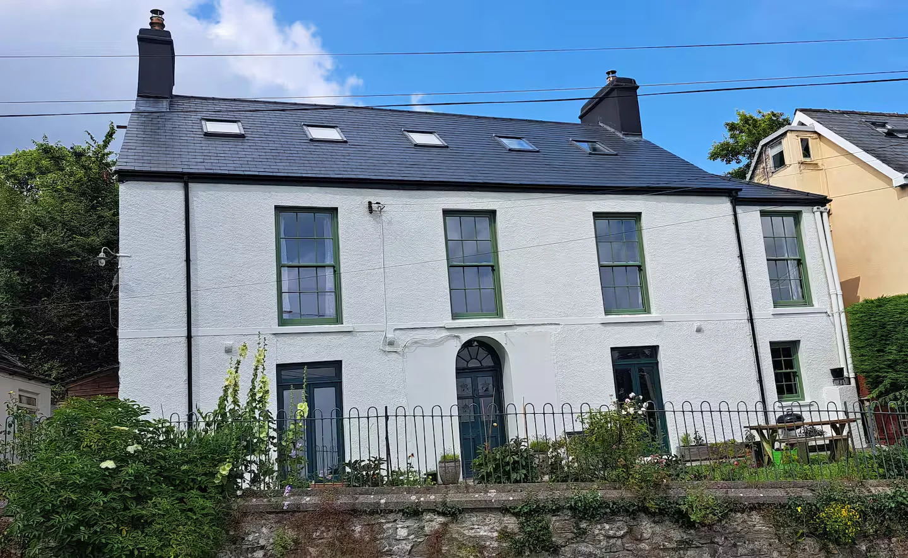
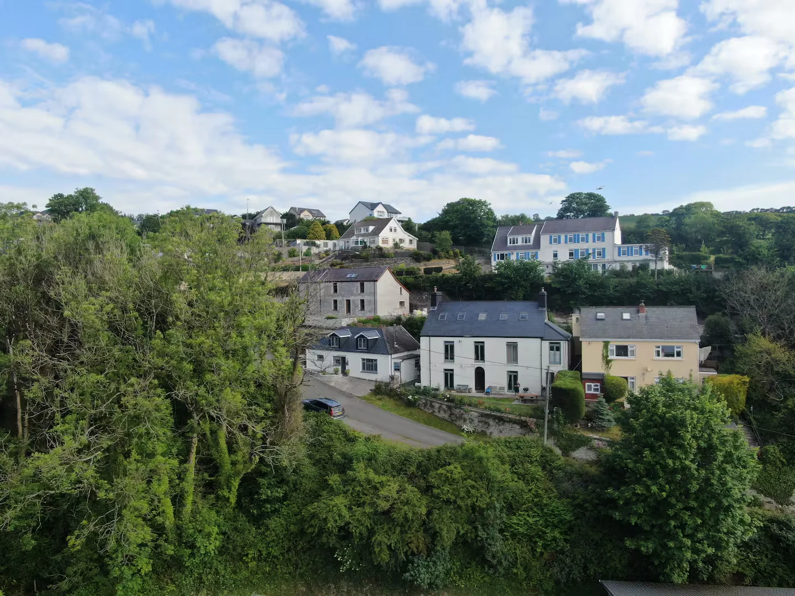
A characterful 6-bedroom family house in Pendine, sleeping up to 12. Your base for the week.
Breakfast, packed lunch for the beach, and a proper evening meal. Good food, every day.
We make the call each morning and drive you to wherever the wind is working.
Spot knowledge, tides, hazards, launch spots, wind pockets — we know this coast inside out.
A driver and kite-savvy host on hand to help you set up, launch, land and pack down.
Free pickup and drop-off from Carmarthen station on stays of 3 nights or more.
Wind or no wind, we guarantee an activity every day. If the wind doesn't show, we surf, SUP, e-bike or walk the coast path instead.
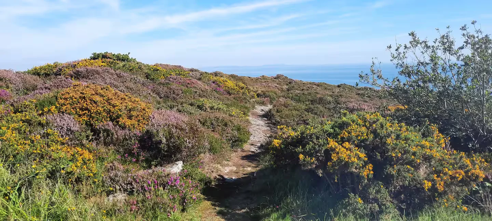
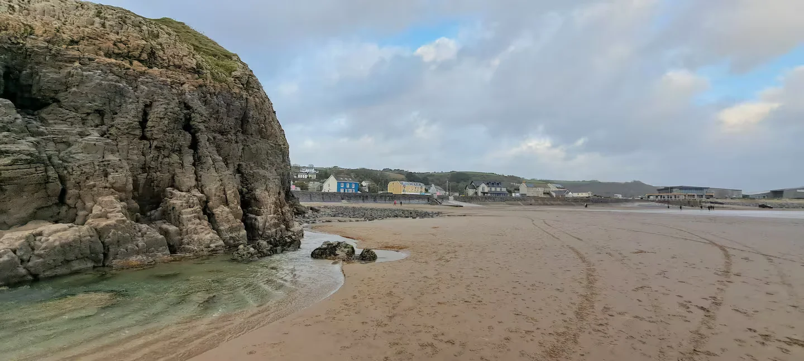
You're still working towards those skills. This trip isn't the right fit yet — and we'd rather tell you now than have you frustrated on the beach. Get in touch and we'll point you towards a school first.
Every guest must hold current membership and third-party liability insurance with either the BKSA or IKO. We'll ask you to confirm this at booking and you may be asked to show proof on arrival.
You ride entirely at your own risk. Our role is to transport, assist and guide — not to supervise, instruct or assess. You are responsible for your own decisions on the water, your own equipment, and judging whether conditions suit your ability on any given day. A short participation agreement is signed by all guests before the first session.
We chase the best conditions every day. Here's what's on our radar.
Vast, flat, open sand at low tide. Our default.
Huge, uncrowded space.
Exposed and powerful, for the wave-hungry.
Scenic Pembrokeshire, surf and kite in the right wind.
Pretty town, food and a gentler day.
West Wales wind is generous but not guaranteed — so a flat day is never a wasted day. Depending on conditions and what the group fancies: stand-up paddleboarding on calm water, e-biking the lanes and coast, walking the Pembrokeshire Coast Path, or surfing the local breaks.
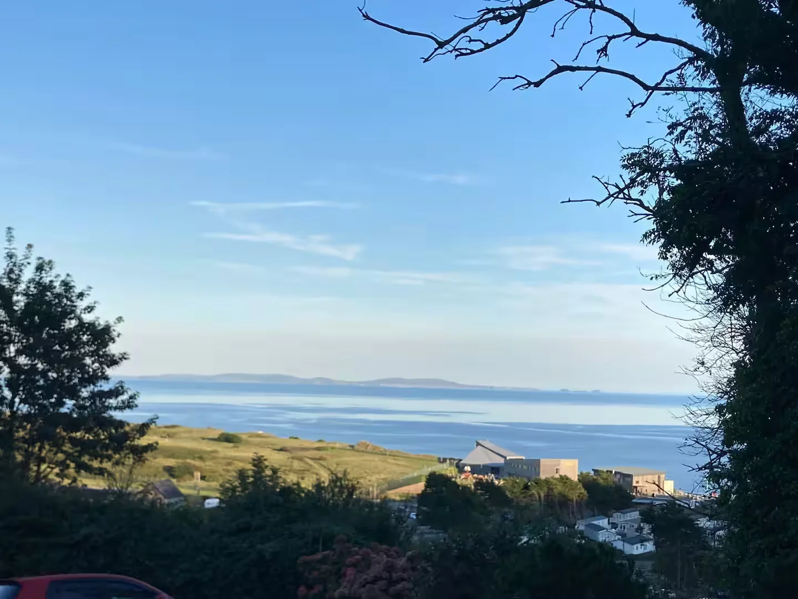
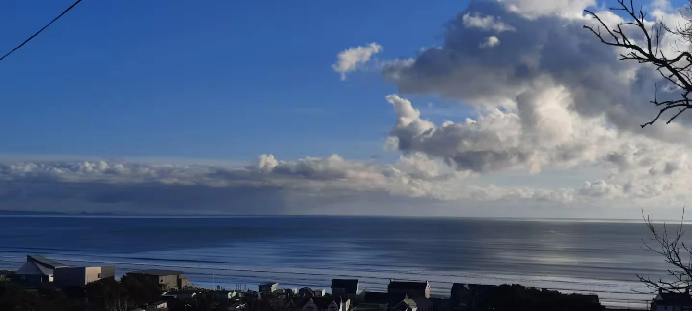
Friday evening to Monday morning. Our core trip — three full days on the coast.
Quieter beaches, more water time. Best for groups taking the whole house.
Bring your own crew and have the run of the place. Sleeps up to 12.
From
£160
per person / per night
Full board — including all meals, beach transport and guiding.
Couples save £60 per couple per stay.
Bring your own equipment and your own BKSA/IKO insurance. Everything else is taken care of.
Yes — this is a guiding and hospitality service, not a school. Bring your own equipment. If you need to hire, we can point you towards local shops, but it's your responsibility to arrange it.
Yes — every guest must hold current BKSA or IKO membership with third-party liability insurance. No exceptions. We'll ask you to confirm at booking.
This trip is designed for competent, independent riders who can self-rescue, water-launch, and ride upwind. If you're still learning, this isn't the right fit — get in touch and we'll point you towards a school first.
Pendine is on the Carmarthenshire coast in West Wales, about 90 minutes from Cardiff and 3 hours from London by car. The nearest train station is Carmarthen — we offer free pickup on stays of 3 nights or more.
April through October is prime season, with prevailing south-westerly winds delivering consistent conditions. Summer brings lighter thermal breezes, while spring and autumn offer stronger, more reliable wind. The coast works in most directions, so we nearly always find somewhere rideable.
A flat day is never wasted. We SUP on calm water, e-bike the coastal lanes, walk the Pembrokeshire Coast Path, or surf the local breaks. Every day is active, regardless of the wind.
Why this stretch of coast works so well for kite sports.
South-westerly winds dominate, which means consistent cross-shore and cross-onshore conditions across most of our beaches. The coast is exposed to the Atlantic fetch, delivering steady, reliable wind from spring through autumn.
With five beaches within an hour's drive, we can switch coasts to find the right wind direction. Southerlies, westerlies and even northerlies all have a working beach nearby. We rarely get skunked.
Pendine Sands at low tide offers miles of flat, open sand — perfect for boosting and carving. We time each session around the tide and wind to put you on the water at the best moment.
April to October is prime season. Spring and autumn deliver stronger, more consistent wind. Summer offers lighter thermals — ideal for wing foiling. Winter works for the hardy, with smaller groups and wild conditions.
Photos from around Claradine House and the West Wales coast — because sometimes you just want to see what you're signing up for.
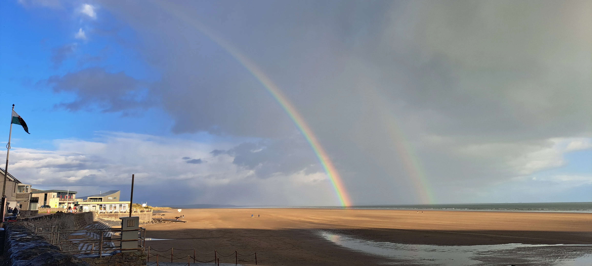
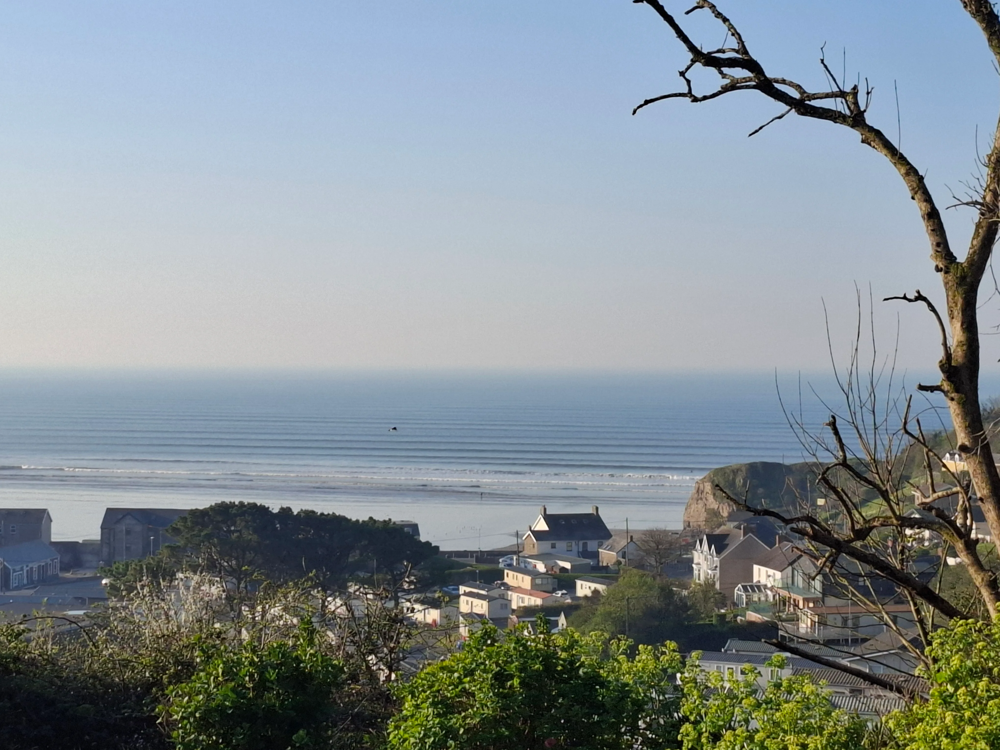
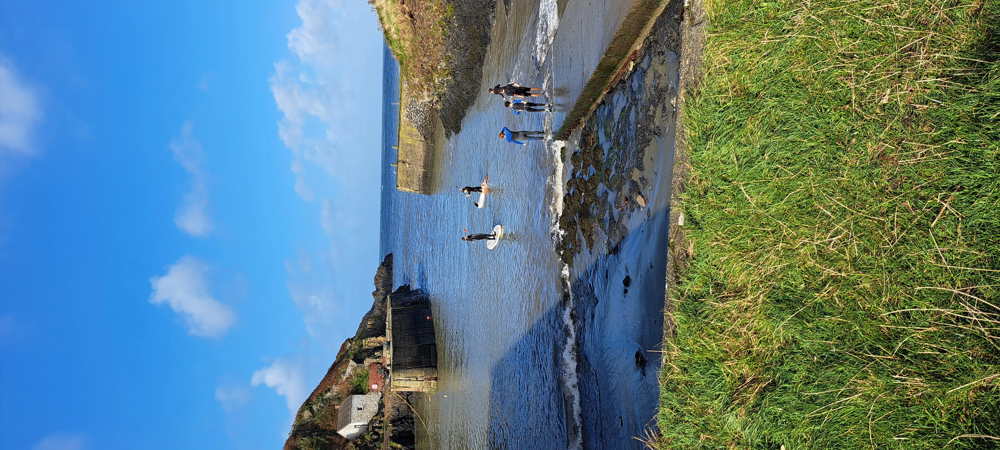
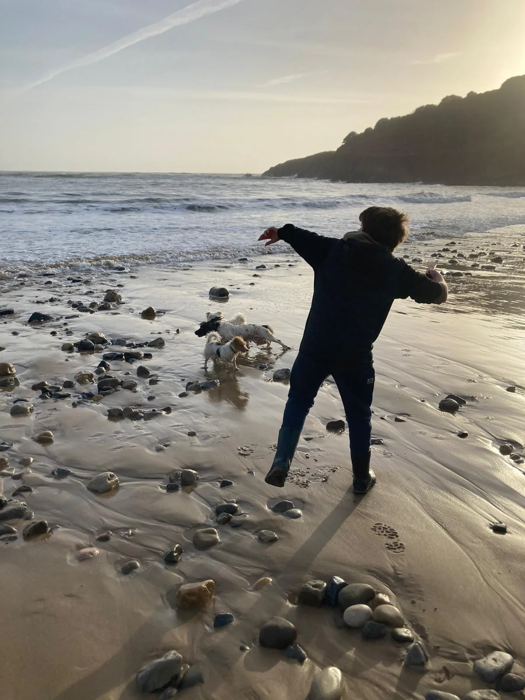
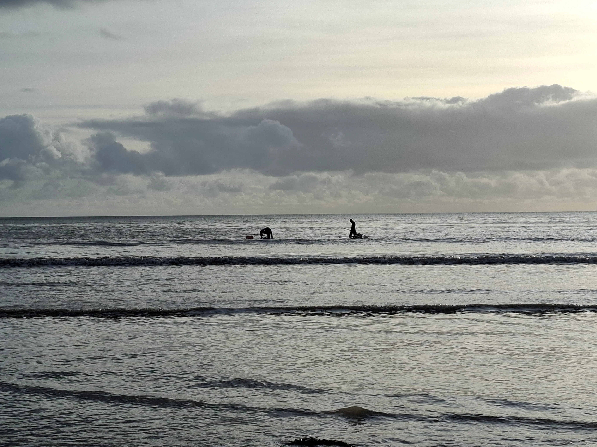
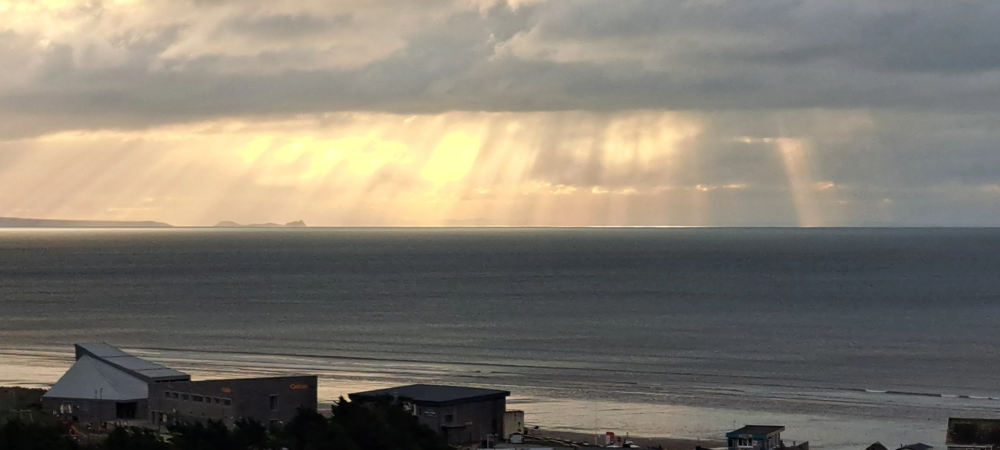
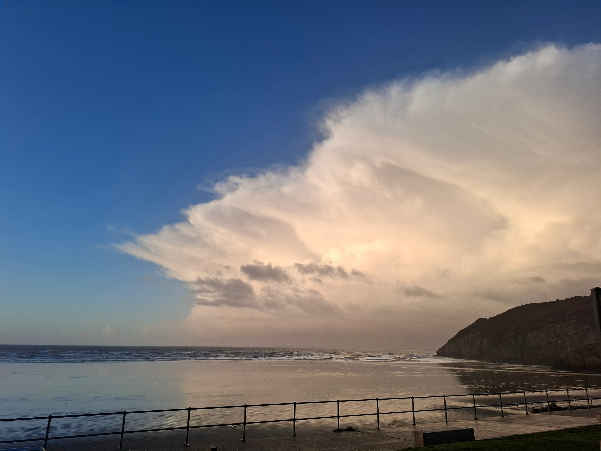
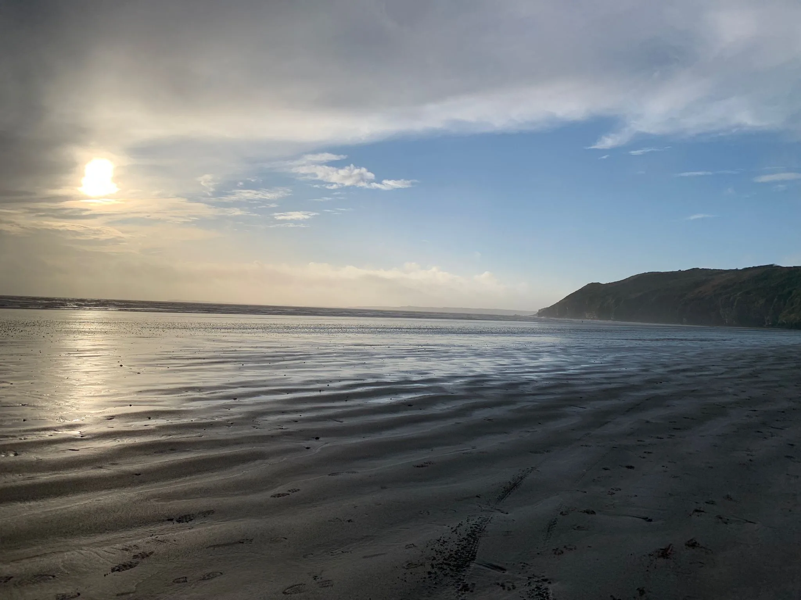
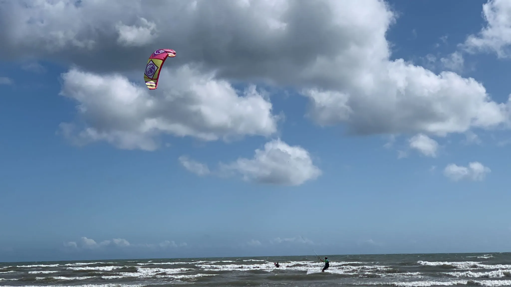
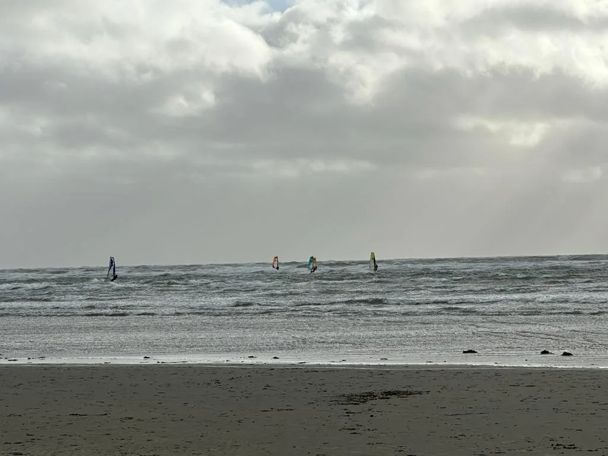
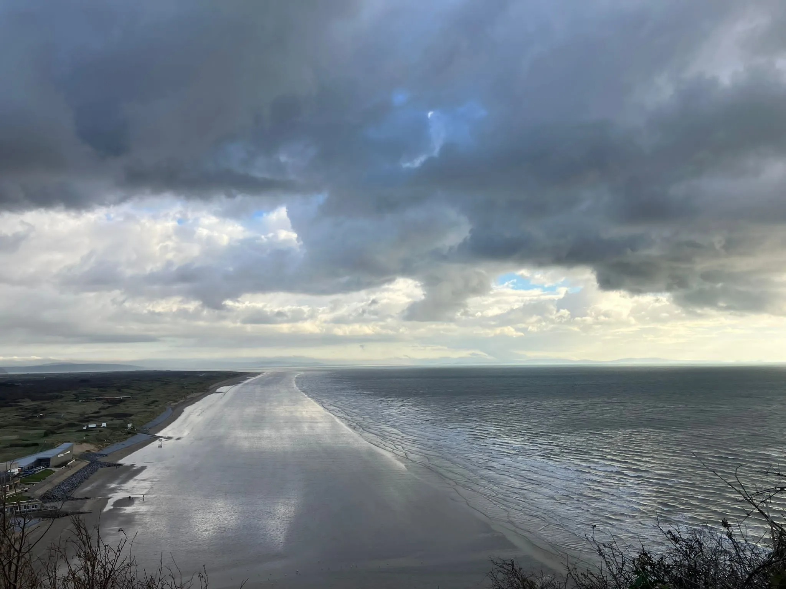
Get in touch with your dates, group size and ability level and we'll sort the rest.
Pendine, Carmarthenshire, West Wales